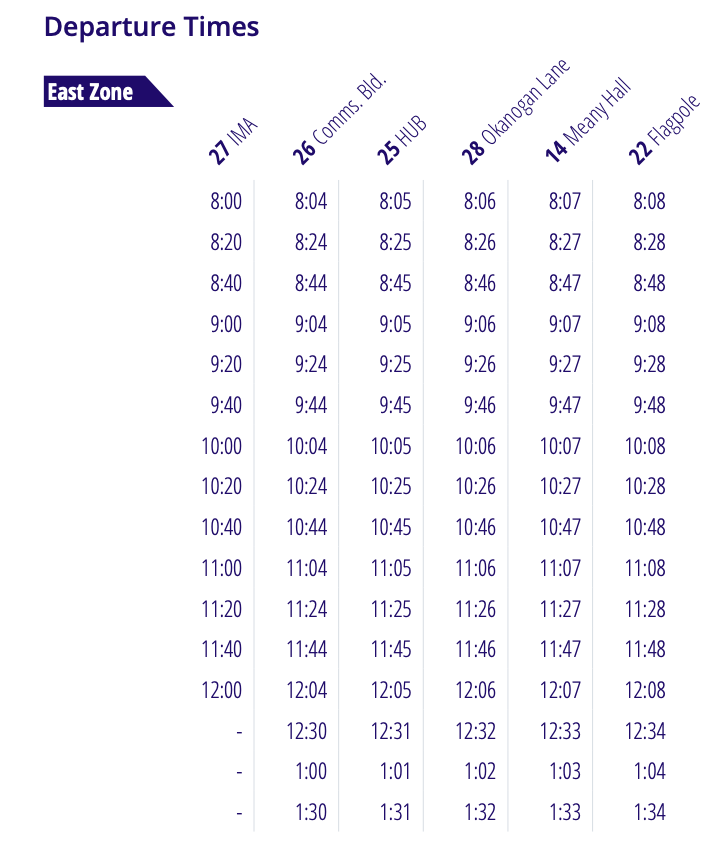
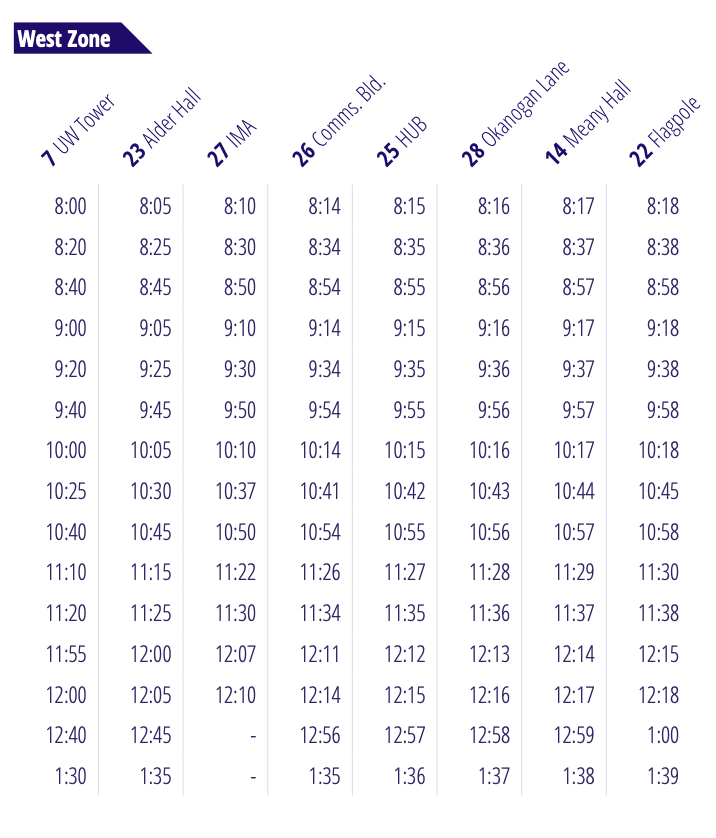

NightRide shuttles pick up passengers at one of eight scheduled stops around campus. After the
Flagpole
stop, the last scheduled stop on campus, shuttles deviate from the fixed route to drop off riders at
their requested location within the East or West zone boundaries. To be dropped off in the East
zone,
riders need to be on an East zone shuttle. Similarly, to be dropped off in the West zone, riders
need to
be on a West zone shuttle. Riders can transfer from a West zone shuttle to an East zone shuttle or
vice
versa at the Flagpole stop. Review the Frequently asked questions for more information.
When it operates
Shuttles pick up passengers from 8 p.m. until 1:34 a.m. for the East zone and from 8 p.m. until 1:39
a.m.
for the West zone, Monday through Friday (excluding University holidays) during the Autumn, Winter
and
Spring quarters with extended service running until 3:30 a.m. the week before and the week of
finals.
Pick
up time schedules for both zones are listed below.
Things to Note
Because the service allows for deviations, it may run behind schedule periodically.
Please do not ask the driver to access an area that is challenging to navigate.
Frequently Asked Questions
NightRide shuttles are white and purple ADA accessible shuttle buses with “Transportation
Services”
written on one side and a Dubs image displayed on the other. An SP+ vendor logo is also visible
above the front doors.
Except for the IMA and UW Tower stops, all stops share a King County Metro bus stop, (five of
those
stops are along Stevens Way), and are designated as NightRide stops by a decal posted on the bus
schedule kiosk. The IMA and the UW Tower stops have full signage.
Drivers open the shuttle doors at each stop and scan the area for potential riders before
proceeding
to the next stop.
For stop descriptions, check out the route schedules for the East zone and West zone. You can
also
view the Zone map for a visual of the stop locations.
This is called a deviation, a rider’s requested drop off location within the zone boundaries (but
not
along the scheduled route). The service will only drop off at scheduled stops while traveling
along
the scheduled stops route. However, riders may remain on the bus and request a deviation at the
Flagpole stop, the last scheduled stop on campus (East deviations from an East zone shuttle and
West
deviations from a West zone shuttle).
After the Flagpole stop, East and West zone shuttles continue on to drop off riders in the East
and
West zones. (See service routes for the East zone and West zone.)
If you want to be dropped off at a scheduled stop in the East zone, you need to be on an East
zone
shuttle. If you want to be dropped off at a scheduled stop in the West zone, you need to be on a
West zone shuttle.
You have two options:
Option 1: You could remain on the East zone shuttle and let the driver know you wish to
transfer
to
a West zone shuttle at the Flagpole stop.
Option 2: You could exit at any of the six stops in the East zone, and wait for a West zone
bus
to
arrive, in which case there is no need to transfer to another shuttle at the Flagpole stop
All four NightRide shuttles service the East zone stops. So, if you board a West zone bus, you
will
get to all East zone stops by staying on board. Depending on where you board, it may mean riding
the
entire route to get to an East zone stop (for example, if you board at the HUB and want to go to
the
IMA).
The East Schedule:

The West Schedule:

UW Shuttles staff are available Monday through Friday from 7:30 a.m. to 4 p.m. at 206-685-3146 or
at
shuttles@uw.edu. During NightRide service hours you can call 206-300-9087 to reach the dispatch
center.
Husky SafeTrip
Husky SafeTrip (formerly Husky NightWalk) provides safe vehicle escorts at night with a uniformed
security guard for UW students, faculty, and staff. Use Husky SafeTrip to get safely from campus to
your
home, your car, or another UW building within the service area.
⚠️ Not for routine transportation — Please use public transit or rideshare for grocery stores,
restaurants, or other non-campus destinations.
How it works
Call 206-685-9255 when ready for a safety escort.
Provide the dispatcher with your location (building name or address).
Be outside and visible for pickup.
Show your UW student, staff, or photo ID when requested.
When it Operates
Hours: 6:30 p.m. – 2 a.m. daily
Not available on University holidays or when UW suspends operations.
Frequently Asked Questions
You can book a Husky SafeTrip From campus to your home, your car, or another UW building within
the
SafeTrip service area.
Husky SafeTrips is not available for:
Trips between two off-campus, non-UW locations
Routine transportation needs
Rides during inclement weather
Medical escorts
The Husky NightWalk is now Husky SafeTrip to better reflect the service — it’s a ride with a
security guard, not a walk.
In addition to booking rides, Husky SafeTrip guards can assist with
Jump-starting dead car batteries
Building & office lockouts (Proper ID required)
How to Use DawgRide
DawgRide is a mobile app that enhances the safety and convenience of late-night commutes for the
UW community by building on existing Husky NightRide and SafeTrip services.
: A stop for NightRide or pickup location for SafeCampus
You can book a Husky SafeTrip by clicking on the map icon in the task bar and
navigating to the SafeTrip tab.
Click the "Enter Pick-up Information" tab at the bottom
and type in your valid student ID number and phone number.
Click submit and then search for and select an on-campus building to be picked up at.
Add yourself to the queue! You can check the driver's ETA on the map as well as the queue that indicates
how many users are in front of you in the queue line.
Keep your phone on in case the driver needs to call to get your exact location for pickup.
Only UW students can use this service. It will not work if you do not input a valid student ID.
The DawgRide map provides the live locations of the shuttles following the loop and the locations
of the nearest stop students can get picked up yet. By clicking on the spot icons, students are able
to view the stop number and location. They can also select their pickup location and be directed
to where it is on campus in respect to the shuttles.
You can submit a safety report by clicking on the report icon in the bottom right
of the safety map and filling out the report form.
Input your valid student ID number to verify your report.
Select a report type and location and write a small description about your report.
Submit your report.
If you make a report that is inappropriate or offensive, you will be banned from the application
and the insititution will be notified about your behavior through confirmation of your student ID number.